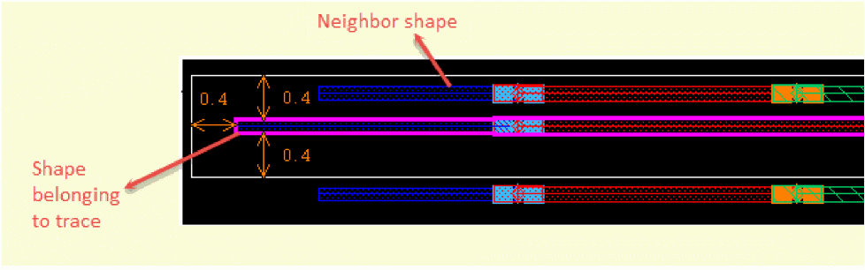
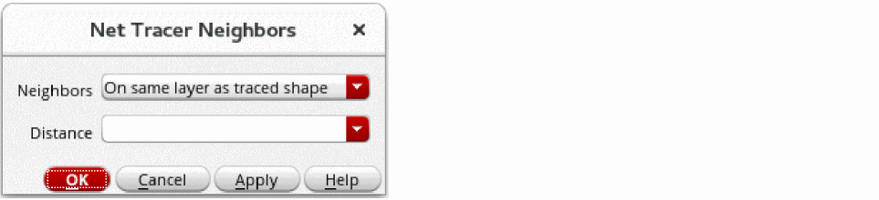

Finding Neighboring Shapes of a Traced Shape
A neighbor is a shape close to a shape belonging to a trace. The Net Tracer lets you find neighboring shapes on the same layer as the traced shape or on any extractable layer. Neighboring shapes need not exist on the same purpose as the traced shape. A neighbor can belong to a different hierarchical level or figGroup.
You can specify the distance from the traced shape within which the Net Tracer can find the neighboring shapes. For example, in the following figure, the shape belonging to a trace has a neighboring shape at d = 0.4.

To find the neighboring shapes of a traced shape:
-
In the layout window, choose Connectivity – Net Tracer – Neighbors.
The Net Tracer Neighbors form opens.
 - From Neighbors, select whether you want the Net Tracer to find the neighboring shapes on the same layer as the traced shape or on any extractable layer. You can choose On same layer as traced shape or On any extractable layer.
- In Distance, specify the distance from the traced shape within which shapes are to be considered as the neighboring shapes of the traced shape.
- In Layout EXL or higher tier, specify whether the Net Tracer should compute net names for the neighboring shapes.
-
Click OK.
All neighboring shapes within the specified distance from the traced shape are highlighted, depending on whether you specified to find them on the same layer or on any extractable layer.
To delete all traces and their neighboring shapes, you can use the following ways:
- Choose Connectivity – Net Tracer – Remove All.
- Click the Remove all traces icon in the Trace Manager form.
Related Topics
netTracerComputeNeighborNetMethod
Return to top